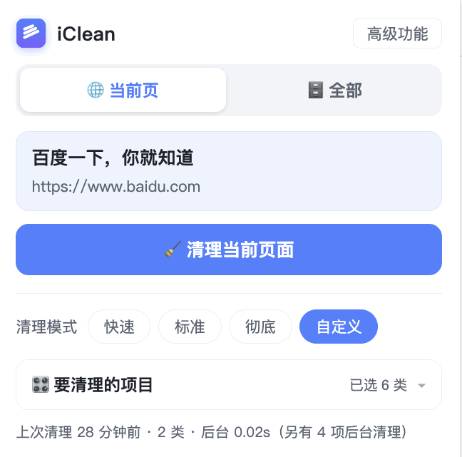
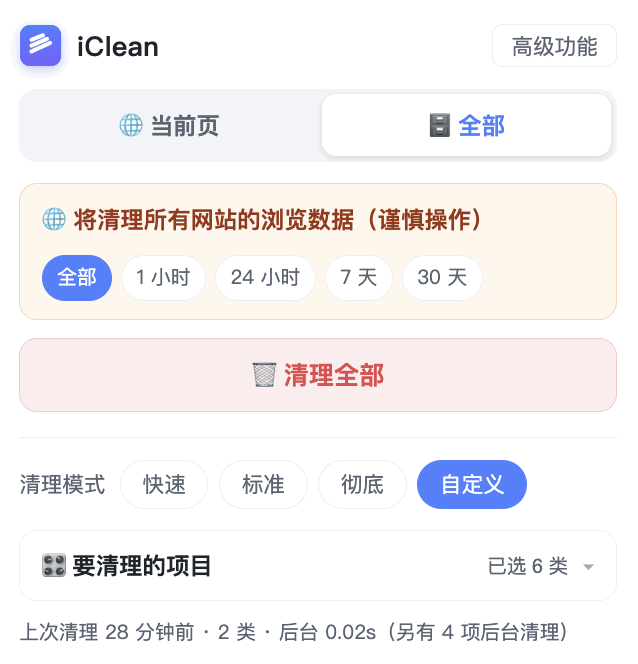
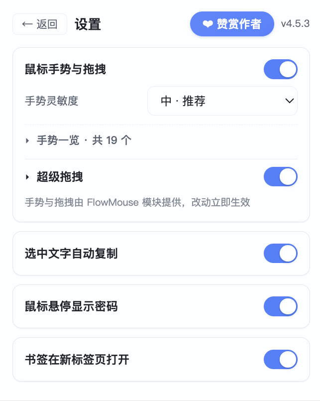

赞赏作者
如果这个工具帮到了你，欢迎扫码请作者喝杯咖啡。你的支持是继续更新的动力。

也可通过 GitHub 提交反馈与建议。
轻量、离线、无账号，所有设置保存在本地浏览器。
针对当前访问的站点清理 Cookie、缓存、Storage、IndexedDB 等，不影响其他站点，不必手动查找设置。
支持选择清理模式：标准 清理常用项，彻底 包含历史与下载记录。

清理所有站点的数据，带 二次确认 防止误触，执行后 自动刷新所有网页，底部会显示本次清理了多少类、耗时多久。

按住右键划动即可执行后退、前进、滚动、切换标签等操作；超级拖拽支持拖动文字搜索、拖动链接新标签打开、拖动图片打开图片。
由开源项目 FlowMouse（GPL v3）提供支持。

点击书签时在新标签打开，当前页面保持不动；通过 Chrome 原生机制实现，不改写你的书签地址，收藏状态与位置显示正常。
选中段落文字即自动复制到剪贴板，无需按 Ctrl+C；在输入框内不会触发，避免干扰输入。
鼠标移到密码框上会明文显示密码，移开自动恢复星号。在需要频繁输入密码的场景很方便，注意在公共场合谨慎开启。
如果这个工具帮到了你，欢迎扫码请作者喝杯咖啡。你的支持是继续更新的动力。
也可通过 GitHub 提交反馈与建议。